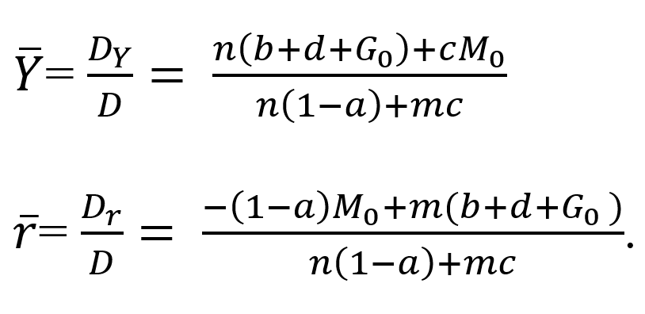

KINH TẾ, TÀI CHÍNH
Một số ứng dụng của toán cao cấp trong lĩnh vực này:
- Mô hình hóa và giải quyết các vấn đề trong lĩnh vực kinh tế và tài chính, như mô hình hóa đầu tư, mô hình hóa định giá tài sản, v.v.
- Phân tích và dự báo trong lĩnh vực tài chính, như phân tích rủi ro, dự báo giá cổ phiếu, dự báo xu hướng thị trường, mô hình phân tích trạng thái cân bằng của nền kinh tế,...
Một Số Ví Dụ
Mô hình phân tích trạng thái cân bằng của nền kinh tế (IS-LM)
Trong tiếng anh, mô hình này là viết tắt của Investmen/Saving – Liquidity preference/Money supply (Đầu tư/tiết kiệm – Nhu cầu thanh khoản/Cung tiền)
Mô hình IS-LM này sẽ phân tích trạng thái cân bằng của nền kinh tế, chúng ta xét cả hai thị trường hàng hóa và tiền tệ. Mục tiêu là chúng ta xác định mức thu nhập quốc dân và lãi xuất ở trạng thái cân bằng.
Xét thị trường hàng hóa dịch vụ với các yếu tố bao gồm:
- Chi tiêu chính phủ: G=G0
-
Chi tiêu hộ gia đình: C= aY+b, (0
- Đầu tư: I= d-cr, (c,d>0), với r là lãi suất
- Phương trình cân bằng thị trường hàng hóa, dịch vụ (PT đường IS):
Y= C + I + G0 = aY + b – cr + d + G0
Tương đương: (1-a)Y + cr = b + d + G0
Xét thị trường tiền tệ với các yếu tố:
- Lượng cầu tiền: L = L(Y,r) = mY – nr, (m,n > 0)
- Lượng cung tiền: M = M0
- Phương trình cân bằng thị trường tiền tệ (PT đường LM):
L = M
Tương đương: mY – nr = M0
Để xác định mức thu nhập quốc dân và lãi xuất cân bằng Y ̅ và r ̅ chúng ta thiết lập hệ gồm 2 phương trình, 2 ẩn Y và r (mô hình IS-LM).
Giải hệ bằng quy tắc Cramer, chúng ta có:
Vậy mức thu nhập quốc dân và lãi suất cân bằng:
Phân tích kinh tế và kinh doanh
Bài toán tìm hàm tổng khi biết hàm cận biên
Giả sử biến số kinh tế mang ý nghĩa tổng giá trị ( tổng chi phí, tổng doanh thu, tổng tiêu dùng,...) là hàm số được xác định theo giá trị của đối số x:
y f(x)
Nếu ta biết được hàm giá trị cận biên My f^' (x) thì ta có thể xác định được hàm tổng y f(x) thông qua phép toán tích phân:
Hằng số C trong tích phân bất định trên được xác định nếu ta biết giá trị của y tại một điểm x_0 nào đó: